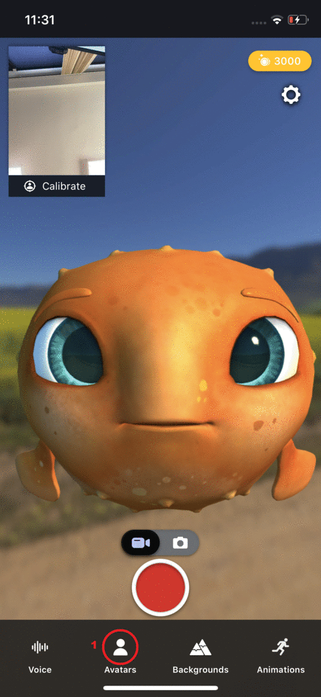

Animaze iPhone: How do I customize avatars? (shape and color)

1. Tap on the Avatars icon and select the avatar you want to customize
2. Tap on the paintbrush icon . The Customization screen will appear.
3. Select body parts using the drop-down list.
- Change the size of body parts using sliders. Reduce the size, height or width by sliding to the left. Increase size, height or width by sliding to the right The new size will be previewed in real time.
- Change the color of body parts by selecting a color in the menu next to the body part you would like to change. . The new color will be previewed in real time.
PRO TIP: To select a color that is not in the color menu, click on the color selector icon .
5. Tap on the green checkmark to save the customized avatar.